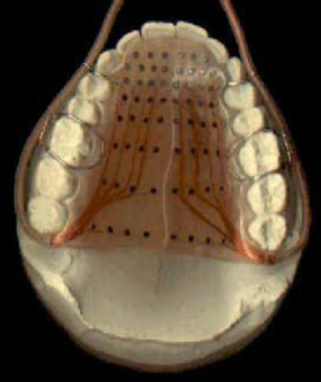

# Fougeron and Keating 1997 <img src="phonmedia/fougeronkeating1997/fougeron_keating_figure2_crop.png"> --- ## Prosodic Boundaries exist - They clearly carry information - ... and serve to disambiguate speech - "Let's eat, Grandpa" - "Let's eat Grandpa" - They affect articulation --- ### ... but in 1997, the precise nature of their effects weren't so clear - Fougeron and Keating set out to examine the nature of the effect of these boundaries on articulation --- ### Motivating ideas - Prosodic boundaries should have some reflex in the phonetic signal - Different types of boundaries may have different effects - Boundaries of different hierarchical levels may be different - There may be declination (an overall downward trend) within boundaries --- ### Four Main Questions - 1) Does articulation of segments vary by position in longer sentences? - 2) Is the variation due to strengthening or weakening in prosodic positions? - 3) Is this variation based on the prosodic hierarchy and cumulative? - 4) What are the acoustical (durational) correlates of these differences? --- # Methods --- ## Electropalatography  --- ## Stimuli - 1 == "nonono no nonono no nonono no nonono" --- ## Participants - Three trained phoneticians (including Pat Keating) --- ### Discussion Questions! > The experimental design seems a tiny bit strange to me. What are the benefits of having such a relaxed (?) design. (Relaxed, as in, just telling the participants to "speak moderately fast and to convey the mathematical meanings indicated" (3730). - Dominique > Reiterant speech—can we talk about this as a method? It seems smart (and useful for something like EMA especially), but definitely far from naturalistic—can we talk about this tradeoff? (And why couldn't the reiterant speech be used for word final position?) - Dom --- ## Prosodic Coding - "Utterance" or "U"- Full Phrase - "Intonational Phrase" or "IP" - A complete intonational contour with boundary tone - "Phonological Phrase" or "PP" - Smaller level of representation w/ one pitch accent and phrase tone - "Word" or "W" - One word (like "Nonono") --- ## The Data <img src="phonmedia/fougeronkeating1997/fougeron_keating_figure2.png"> --- # Results --- ## Within-Domain Results --- ### Within-Domain Results - "Does amount of contact vary at different places within prosodic domains?" - If not, all contact should be consistent throughout the domains --- --- ### Domain Initial Effects - **Utterance, IP and PP Initial /n/ are stronger** - No effect for Word - This is *not* due to stress - The story is less clear for /o/ - Some evidence for initial strengthening, but varies across speakers --- ### Domain Final Effects - No consistent effect for /n/ - Word and PP for Speaker 2, IP for Speaker 3 - **Domain final /o/ shows strengthening** - All speakers have domain final /o/ stronger than medial - Usually final is stronger than initial, too --- ### Is there any progressive declination or strengthening? - **No evidence for within-domain declination** - Scattered evidence for progressive strengthening - **No evidence for sentence level declination or strengthening** --- ## Across-Domain Effects --- ### Across-Domain Results - "Does amount of contact vary depending on the *type* of prosodic boundary?" - If not, all strengthening should be consistent across domains. --- <img class="big" src="phonmedia/fougeronkeating1997/fougeron_keating_figure4.png"> --- --- ### Across-domain Effects - **Speakers Vary!** - Different speakers appear to "group" the domains differently - Some distinguish U and IP, some distinguish IP and PP... - There's no clear story here --- ### Generalizing across speakers for /n/ - Syllable != Word - 2 Speakers - Word != PP - 2 speakers - PP != U/IP - 3 speakers - Higher domain is variable --- ### Vowel Duration Results - No strong link between hierarchy and V duration - Although word boundaries tend to have shorter vowels than phrase boundaries --- ### Across-Domain Effects Summary - There's some evidence that different levels of hierarchy matter - ... but mostly... - **Speakers Vary!** --- ### Discussion Question! > Is an r squared of 0.2 worth reporting ?? Especially if it was only with one of the three? - Dom > With this much across-speaker variability, how can we claim these hierarchical effects are extant in language at all? - Will --- # Discussion --- ### Four Main Questions - 1) Does articulation of segments vary by position in longer sentences? - 2) Is the variation due to strengthening or weakening in prosodic positions? - 3) Is this variation based on the prosodic hierarchy and cumulative? - 4) What are the acoustical (durational) correlates of these differences? --- ### 1) Does articulation of segments vary by position in longer sentences? - <strong>YES!</strong> - **Cs and Vs vary in articulation strength depending on position in the utterance** --- ### 2) Is the variation due to strengthening or weakening in prosodic positions? - <strong>YES!</strong> - Variations due to positioning appear to be linked to prosodic boundaries - Domain initial Cs are stronger - Domain final Vs are stronger - **Articulatory strengthening delimits prosodic boundaries!** --- ### 3) Is this variation based on the prosodic hierarchy and cumulative? - <strong>It's complicated!</strong> - Different levels of hierarchy show different levels of strengthening - Although the nature of it is very variable among speakers --- ### 4) What are the acoustical (durational) correlates of these differences? - <strong>It's complicated!</strong> > In contrast, it is surprising that final vowel lengthening marked only two distinctions in our corpus, between word and higher levels, but not between the two phrasal levels as was shown in Wightman et al. 1992. We have no explanation for this. --- ### What about all that Declination? - There's no evidence for an independent declination effect - But one could easily emerge from strengthening at different prosodic levels --- ### Discussion Question! > It appears that the influence of prosodic domains on articulation varies for vowels and consonants. The localized effect at prosodic main edges is initial strengthening for consonants and final strengthening for vowels. What is the possible explanation for this difference? - Fahad --- ### What might cause this strengthening? - 1) Increased duration? - 2) Increased distance between segments? - 3) Increased coarticulation? - 4) Greater coarticulatory resistance? - 5) Increased 'effort' or energy? --- ### Discussion Question! > On page 3737, the authors list both "increased coarticulation" and "greater coarticulatory resistance" as possible mechanisms for inducing strengthened segments. I was wondering if these would both take place within the same speaker, and whether those two different approaches to coarticulation tell us different things about what the speaker might be doing. - Dominique --- ### Could this be listener-directed enhancement? - Strengthening can help distinguish word boundaries from higher levels - It might signal different prosodic boundaries (and their levels) for listeners - It might enhance segment-specific qualities aiding in lexical access --- ### Discussion Question! > So far the evidence for the lack of supralaryngeal declination is drown from speech that does not involve communication with a speaker.What would the effect of declination in articulation look like when the data were drawn from communication between two speakers? - Fahad --- ### Discussion Question! > Can we also talk about 'articulatory effort'? This is a term that is never really given a sufficient definition, and it's unclear what relationship articulatory effort has with speech processes (since it's so variably defined). - Dom --- ### Conclusions - Prosodic Boundaries affect articulations - Domain-initial Cs and Domain-final Vs are stronger - Interactions with the prosodic hierarchy are speaker-specific - *You need to attend to prosody when studying articulation!* --- ### Questions ---